Your Global Website Shouldn't Be Your Biggest Struggle
Your business deserves a website that connects with customers in both Japanese and English markets.
- Confused about how to create a website that works in multiple languages?
- Struggling to make your DIY website look professional in both Japanese and English?
- Finding it hard to maintain a consistent brand across different cultural markets?
- Losing international customers because your website doesn't speak their language?
I understand the unique challenges of creating websites that bridge Japanese and English markets. Let me handle the cultural and technical details so you can focus on growing your global business.
Hello there!
I'm Seira, a multilingual designer creating websites that bridge cultures.
I craft simple yet stunning websites and logos that help businesses connect with diverse audiences. With my Japanese-English cultural fluency and over 5 years of experience in UX/product design, I bring unique insights to every project.
I combine my bicultural background with human-centered design expertise to create accessible, effective solutions that bridge Eastern and Western audiences. Having lived and worked in both cultural contexts, I offer unique insights that go beyond typical design services.
My passion lies in creating beautiful, easy-to-navigate websites that effortlessly connect your audience with what they seek. I'm eager to collaborate with you, understand your vision, and help your business thrive globally through professional and captivating design. Let's create something amazing together!

Design that bridges: Your Global Growth Partner
Websites That Speak Their Language
I create websites that truly resonate with both Japanese and English-speaking audiences, capturing cultural nuances that automatic translation misses. Your message will feel natural and intentional to visitors from both markets.
One Website, Two Markets
Save time and resources with a cohesive design strategy that works for both Japanese and English audiences. I'll help you maintain brand consistency while adapting to cultural preferences in navigation, imagery, and content structure.
Cultural Technical Expert
Beyond just design and development, I offer cultural consultation to help you avoid missteps in your global expansion. My combined expertise in both web technology and cross-cultural communication ensures your digital presence makes the right impression everywhere.
CASE STUDY

Helping Hisami Reach a Global Audience – 80 Followers in 7 Days!
Read the Case StudyHow We Work Together
1
Schedule Your Free Bilingual Consultation
Let's start with a friendly chat in English or Japanese about what you want to achieve online. We'll discuss how your website can work effectively in multiple markets and identify what cultural elements matter most for your global success.
2
Create Your Cross-Cultural Digital Presence
We'll collaborate closely throughout the design process, combining your expertise in your business with my knowledge of different cultural preferences. I'll show you how design choices, colors, and layouts can be optimized for both Western and Eastern audiences while keeping your brand consistent.
3
Launch Your Global Website
When your multilingual website is ready, I'll ensure everything works perfectly in both languages and cultures. You'll receive a website that speaks directly to customers in their own language, respects cultural nuances, and gives your business the tools to succeed in international markets.
What we offer:

All-in-one web presence
A complete website package — from brand to launch — tailored for Japanese and English-speaking audiences. Perfect for growing your presence with clarity and confidence.

Multilingual Website Development
I build culturally fluent websites in both Japanese and English that feel natural, professional, and easy to use — not just translated, but truly localized.

Cross-Cultural Website Redesign
Improve your website’s clarity, usability, and accessibility with strategic, user-centered design that works across devices and cultures.
Introducing Website Clinique
Your friendly website support & guidance. Whether you need styling advice, user journey optimization, or technical support, we're here to ensure your website reaches its full potential. Book a time with me to get started!
This service would be perfect if:
- You’re comfortable with design software
- You already started to design, but need professional feedback
- You want to learn how to update your website on your own
- You’re on a budget and aiming to design your own website
No matter your skill level or financial constraints, Website Clinique is here to assist you!
Testimonials


What impressed me most was Seira's outstanding design sense and English language skills. Creating a logo and website was a completely new experience for me. During our meetings, she listened attentively and helped draw out my vision for the site. She clearly explained what I needed to do, and delivered everything by our target completion date, which was incredibly helpful.
As a writer, I also asked her to translate my written work (poems and stories) into English. Translation requires deep familiarity with both languages and an understanding of both cultures. Seira translated my work more beautifully than I could have imagined, achieving results that were far beyond my own English abilities and expression. Thanks to her English translations, my readership expanded from 'Japanese people' to 'people around the world.' This is truly remarkable.
Seira is always calm and full of wonderful ideas. Her natural sense and creativity are exceptional, and I felt completely comfortable entrusting my project to her. Of course, she also respected my opinions and feedback, so we could create together without compromising—I could always say 'I prefer this!' The finished website exceeded all my expectations and imagination, which makes me truly happy.
Even after the website was completed, she responded quickly whenever I wanted to make adjustments, and I'm deeply grateful for that. The site has already received feedback from readers, and my Instagram followers increased by about 80 people in just one week. I look forward to continuing to work with her for a long time to come!

Seira was patient and diligent in helping design my logo first and then my website. I was so happy with the results, I didn't hesitate to share it with friends and families I was working with. Being a small-first time business owner I wanted something that reflected my personality and show case a high quality service I wanted to provide; both the logo and website demonstrate that and I couldn't be happier. I highly recommend Seira and would definitely work with her again.
Frequently Asked Questions
How long will it take to build my website?
It usually takes 4 to 16 weeks, depending on the size, features, and overall scope of the project. A standard website typically takes about 8 to 12 weeks. After learning more about your needs, I’ll provide a clear timeline so you know what to expect at every stage.
How much does a website cost?
Pricing depends on your specific goals, desired features, and the complexity of your project. I offer flexible packages ranging from simple one-page websites to full-featured, bilingual sites with custom design and integrations.
For example:
- One-language websites (1–5 pages): $1,000 – $3,000
- Custom or multilingual websites, including cultural translation: $4,000 – $8,000+
- UX/UI design + development with cross-cultural strategy: $5,000 – $12,000
If you’re not sure what you need yet, no worries! I’m happy to learn more about your project and provide a custom quote that fits your goals and budget. Together, we’ll explore the best options so you can make an informed decision—no pressure, just honest guidance.
What do I need to get started?
We’ll start with a conversation to understand your goals. After that, you’ll need your logo (if you have one), brand colors, photos, and content—but don’t worry, I’ll guide you through everything step by step.
Will I be able to update the website myself?
Yes! I build user-friendly websites and provide a walkthrough so you feel confident making updates—like swapping photos or editing text—without needing to touch any code.
What if I don't have a logo or branding yet?
No problem! I offer logo and brand design services as part of my web design packages or as a standalone option. If you’re starting from scratch or want to refresh your existing look, I can help create a brand identity that feels true to your business and resonates with your audience.
Can you help with copywriting or translating content?
Yes! I can assist with writing or refining your website content in English and Japanese. Whether you need help organizing your message, writing from scratch, or translating existing content, I’ll make sure your words are clear, engaging, and aligned with your brand voice.
Do you only work with Japanese clients?
Not at all! I work with clients from all over the world. While I specialize in bilingual and cross-cultural projects involving Japanese and English, I welcome anyone who’s looking for a thoughtful, design-focused approach to building their web presence.
Do you speak English or Japanese?
Both! I’m fluent in English and Japanese, so we can communicate in the language you're most comfortable with. This is especially helpful for bilingual websites or international projects.
Do you build only English websites or Japanese websites?
I build websites in both English and Japanese, as well as bilingual sites that seamlessly integrate both languages. Whether you need a site in one language or a fully bilingual experience, I tailor the design and content to suit your audience and business goals.
Let's get started — together
I’d love to hear about your project. Book a free consultation and let's make your ideas a reality.